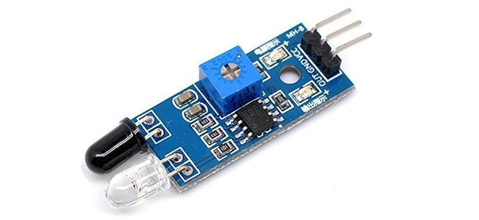

An infrared (IR) sensor is an electronic device that measures and detects infrared radiation in its surrounding environment. Active IR sensors have two parts: a light emitting diode (LED) and a receiver. When an object comes close to the sensor, the infrared light from the LED reflects off of the object and is detected by the receiver. There are two types of infrared sensors: active and passive. Active infrared sensors both emit and detect infrared radiation.
Specifications
Main chip: LM393Operating voltage: 3.3-5 VDC
Distance measure range: 2-30 cm
Dimensions: 48 x 14 x 8 mm
Weight: 15 gms

| On Sensor | On Raspberry | On Arduino |
|---|---|---|
| Vcc | Power supply 3.5V to 5V (pin 1 or 2) | Power supply 3.5V to 5V |
| Ground(GND) | Ground (pin 6) | Ground (GND) |
| OUT | Pin 16 | Data pin (pin D3) |
It can be worked with
Working of DHT with Arduino Uno
void setup(){
pinMode(13,OUTPUT);
pinMode(3,INPUT);
Serial.begin(9600);
}
void loop(){
if (digitalRead(3)== LOW){
digitalWrite(13,HIGH);
delay(10);
}
else{
digitalWrite(13,LOW);
delay(10);
}
}
...
...